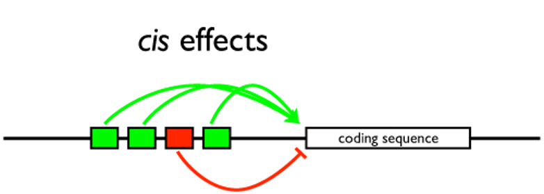

这里，我们基于cis_regulation 的原理，定位关键基因。我们首先对每一个lncRNA 搜索距离其100kb以内的mRNA，组成”lncRNA－mRNA 匹配对”。对这些匹配对，再利用mRNA和lncRNA的基因表达量进行关联分析，从而定位表达协同的“lncRNA－mRNA匹配对”。在得到匹配对以后，我们可以通过mRNA的功能推测与其匹配的lncRNA功能。
图5.1 lncRNA顺式调控示意图
老师可以通过自己倾向的几个原则之一，利用excel对我们的输出结果自行进行简单操作，从而定位关键基因：
(1）老师可以通过mRNA 或者lncRNA 的差异表达程度，进一步过滤筛选更为严格的“lncRNA-mRNA匹配对”。（我们的输出文件会有每一个lncRNA以及mRNA的差异表达程度）；
(2）与老师感兴趣的mRNA有关联的lncRNA是关键lncRNA。如果老师有感兴趣的mRNA的话，通过excel 搜索命令，就可以找到与之关联的关键lncRNA。
(3）案例：Genome-wide Mapping and Characterization of Notch-Regulated Long Noncoding RNAs in Acute Leukemia的作者就是通过该方法成为寻找到关键lncRNA。
表7 lncRNA顺式调控示意图
| lncRNA_name | lncRNA_logFC | ncRNA_p_value | mRNA_name | mRNA_logFC | mRNA_p_value | distance |
|---|---|---|---|---|---|---|
| RP11-862L9.3 | -1.337504919 | 0.018773892 | ZNF236 | -0.126316469 | 0.596851459 | 78023 |
| RP11-862L9.3 | -1.337504919 | 0.018773892 | MBP | -0.026029997 | 0.960765809 | 81565 |
| RP11-527H14.2 | -1.519015199 | 0.023924117 | ANKRD30B | -0.301324528 | 0.603648636 | 155762 |
| RP1-290I10.7 | 1.135807811 | 0.04445406 | TFAP2A | -0.048655661 | 0.930942806 | 27894 |
| RP1-290I10.7 | 1.135807811 | 0.04445406 | GCNT2 | 0.087585436 | 0.855855377 | 126479 |
注：
1）第一列为lncRNA，第二列和第三列是这个lncRNA的差异表达log（fold-change）和显著性p_value；第四列为mRNA，第五列和第六列是这个mRNA 的差异表达log（fold-change）和显著性p－value。每一行是距离在100kb以内的一对lncRNA和mRNA，其中距离是在最后一列；
2）文件结果汇总在lncRNA/cis-regulation 中；
3）如果是windows系统，请用excel文件打开所有的文件。